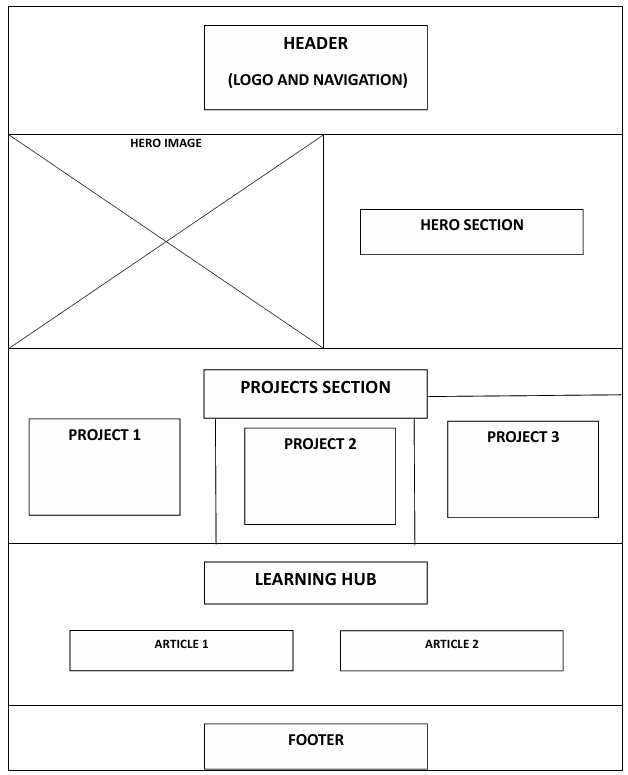
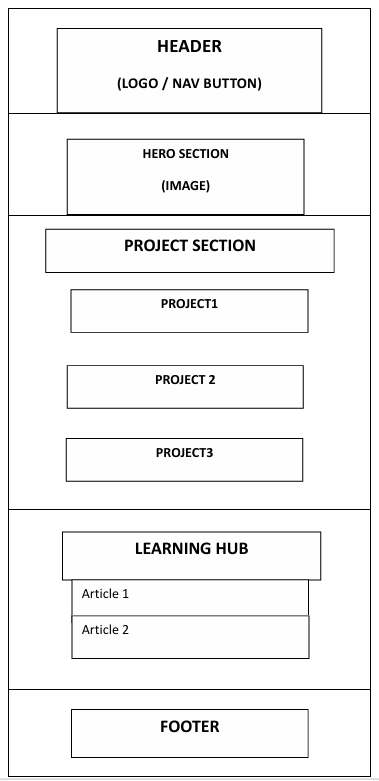

Site Name
Fifth Version Studios represents a creative media studio focused on visual effects, visual storytelling, tech and digital innovation.
The name Fifth Version represents the idea that the future evolves through combining creativity and technology. The website will serve as a platform to present creative visual work projects, technology learning resources, and collaborative media work.
Site Purpose
The purpose of the Fifth Version Studios website is to introduce visitors to creative storytelling projects, visual effects concepts, and educational tech resources. The site will showcase studio projects, highlight collaborative work from Chair Records, provide beginner-friendly learning content about visual effects and creative development, and include a contact form for communication and participation opportunities. The site will also include interactive features such as dynamically generated project content from JSON data, modal dialogs for project previews, and API-based creative inspiration sections.
Scenarios
- What creative projects is Fifth Version Studios currently developing?
- Where can I learn 3D, visual effects and storytelling skills?
- How can I collaborate with Fifth Version Studios?
Color Scheme
Primary Color: #0D0D0D (Almost Black) — used for background, header, and hero section.
Secondary Color: #00A3FF (Neon Blue) — used for buttons, accents, and links.
Highlight Color: #FFFFFF (White) — used for text and clean minimal design.
Typography
Roboto for body text
Orbitron for headings
Wireframe
Desktop layout

Mobile View Layout
